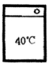
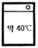
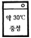
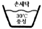
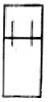
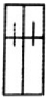
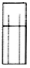
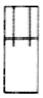

패션머천다이징산업기사 (2016-08-21 기출문제)
1과목: 패션마케팅
1. 리테일 머천다이저의 직무가 아닌 것은?
- 사입 기획
- 재무 기획
- 상품구성 기획
- 생산촉진 기획
(정답률: 62%)

2. 시장 표적화 전략 중 자사의 독특한 이미지를 부각 시키기 위해 브랜드 이미지, 광고, 디자인 등 부가가치적 측면을 강조해야 하는 전략은?
- 차별화 전략
- 비차별화 전략
- 집중화 전략
- 비집중화 전략
(정답률: 82%)
3. 상품이나 패션에 관한 전문 지식을 가지고 소비시장의 동향을 정확하게 파악하여 적절한 상품의 구매를 담당하는 패션산업부분의 스페셜리스트는?
- 디스플레이 디자이너(Display designer)
- 스타일리스트(Stylist)
- 패션 바이어(Fashion buyer)
- 패션 컨버터(Fashion converter)
(정답률: 90%)
4. 다음 중 가격결정 방법이 아닌 것은?
- 원가 중심 가격 결정
- 수요(소비자)중심 가격결정
- 경쟁제품 중심 가격결정
- 도매 중심 가격결정
(정답률: 84%)
5. 패션머천다이저의 책임과 업무 중 상품기획 입안, 판매 기획 입안, 생산ㆍ물류기획 입안, 예산계획 입안 등이 해당되는 책임은?
- 목표설정 책임
- 정보분석 책임
- 조직운영 책임
- 의사결정 책임
(정답률: 53%)
6. 어패럴 머천다이저의 '생산지원업무'와 관련이 없는 것은?
- 생산의뢰계획
- 소재기획
- 제조계획
- 검품∙보관계획
(정답률: 50%)
7. 마케팅의 역사적인 발전단계를 7단계로 나누어 구분할 때 급속히 변화하는 외부환경에 능동적으로 대응하기 위해 통합적 의사결정의 중요성이 대두된 시대는?
- 마케팅 정보시스템 시대
- 생태학적 영역 지향 시대
- 전략적 마케팅 시대
- 세일즈 지향 시대
(정답률: 69%)
8. 저관여 의류상품의 제품 요인에 해당되지 않는 것은?
- 낮은 가격
- 높은 신분 상징성
- 표준화된 스타일
- 높은 실용성
(정답률: 86%)
9. 패션머천다이징 기획단계 중 디자인 개발에 속하지 않는 것은?
- 생산 관리 설정
- 컬러 이미지 설정
- 소재 기획 설정
- 디테일 방향 설정
(정답률: 84%)
10. 크리에티브한 디자인 능력을 중시하면서 소비자의 감성을 정확하게 파악∙예측하며 디렉터적인 능력을 가진 패션머천다이저의 업무수행 타입은?
- 상인형 머천다이저
- 계수관리형 머천다이저
- 전문관리형 머천다이저
- 고감도형 머천다이저
(정답률: 83%)
11. 표적시장 선택전략에 대한 설명으로 틀린 것은?
- 비차별적 마케팅전략은 기능성이 강조되나 유행의 변화가 별로 없는 패션제품에 효과적이다.
- 자원이 제한되어 있는 중소기업의 경우에는 경제성이 높은 차별적 마케팅전략이 유리하다.
- 비차별적 마케팅전략을 구사하는 기업들은 일반적으로 시장에서 가장 큰 세분시장을 공략한다.
- 집중적 마케팅전략은 생산과 마케팅에서 고객들의 욕구를 충족시킬 수 있으므로 세분시장 내에서 강력한 시장지위를 구축할 수 있다.
(정답률: 58%)
12. 표적시장 마케팅의 주요 3단계의 올바른 순서는?
- 시장세분화 → 표적시장 선정 → 포지셔닝
- 표적시장 선정 → 시장 세분화 → 포지셔닝
- 포지셔닝 → 마케팅 믹스 → 시장 세분화
- 마케팅 믹스 → 포지셔닝 → 시장세분화
(정답률: 65%)
13. 라이프 사이클에 따른 상품분류 중 피크상품(성숙상품)의 특징이 아닌 것은?
- 매상고가 크다
- 신장률이 둔화된다.
- 가격할인에 민감하다.
- 계속적인 매출상승을 기대할 수 있다.
(정답률: 65%)
14. 직접마케팅에 대한 설명이 틀린 것은?
- 특수고객에 대한 데이터를 구축할 수 있다.
- 직접마케팅 결과를 측정할 수 있다.
- 소비자들은 시간을 절약할 수 있으며 편리하고 비교 쇼핑이 가능하다.
- 마케팅 메시지를 소비업자들에게 전달하여 많은 고객을 확보할 수 있다.
(정답률: 53%)
15. 다음 중 패션 홍보의 수단이 아닌 것은?
- 인터뷰
- 보도자료
- 경품 및 쿠폰 증정
- 패션업체에 대한 자서전 소개
(정답률: 48%)
16. 다음 중 판매촉진 계획에 해당되지 않는 것은?
- 쿠폰제공
- 이벤트
- 할인판매 행사
- 유통경로 결정
(정답률: 95%)
17. 생산기획 중 PDS(Pattern design system)의 특성으로 적합하지 않는 것은?
- 신속하고 정확하다.
- 초기에는 비용면에서 저렴하다.
- 인간공학적인 측면에서 필요하다.
- 실제 사이즈에 대한 적응이 필요하다.
(정답률: 77%)
18. 윙 게이트(J.W.Wingate)의 상품구성 이론에 따른 상품 구성 설명이 바르게 짝지어진 것은?
- 기본상품 : 점격향상을 위한 상품
- 기본상품 : 판매촉진을 위한 저가격 상품
- 전략상품 : 재고처리 상품
- 전략상품 : 유행성이 강하지 않은 항상 상품
(정답률: 50%)
19. 기업의 경쟁형태에 관한 예로서 경쟁형태의 설명으로 옳은 것은?
- 독점 : 스판덱스 시장은 A, B, C, D사에 의해 지배 당하고 있어 사실상 후발업체 진입이 힘든 상황이다.
- 과점 : 아웃도어 스포츠웨어 업계는 A, B, C사에 의해 지배당하고 있어 사실상 후발업체 입이 힘든 상황이다.
- 독점적 경쟁 : A사와 B사는 기능성 스포츠 내의시장을 독점하고 경쟁을 벌이는 업체들이다.
- 순수경쟁 : 많은 수의 기업이 청바지 시장에 뛰어들어 차별화된 상품으로 치열한 경쟁을 벌이고 있다.
(정답률: 53%)
20. 마케팅 개념의 변천 과정을 순서대로 정리한 것은?
- 생산지향→품질지향→판매지향→고객지향
- 생산지향→판매지향→고객지향→품질지향
- 고객지향→생산지향→품질지향→판매지향
- 판매지향→품질지향→생산지향→고객지향
(정답률: 59%)
2과목: 패션소재기획
21. 다음 중 강도가 가장 큰 섬유는?
- 아마
- 면
- 아세테이트
- 양모
(정답률: 57%)
22. 유행을 선취하는 패션으로서, 단순하고 진보적이고 실험적인 디자인이 많은 트렌드는?
- 모던(Modern)
- 엑조틱(Exotic)
- 로맨틱( Romantic)
- 스포티(Sporty)
(정답률: 47%)
23. 소재의 발주에서 기획∙설계 단계에 해당되지 않는 것은?
- 소재의 관한 정보 수집 및 분석
- 수량, 납기, 가공비 및 납품방법 결정
- 발주서 및 원가계산
- 후 가공 처리 방법 결정
(정답률: 34%)
24. 다음 중 열가소성 섬유가 아닌 것은?
- 양모
- 나일론
- 폴리에스터
- 트리아세테이트
(정답률: 62%)
25. 마섬유의 종류 중 모시가 해당하는 것은?
- 아마
- 대마
- 저마
- 황마
(정답률: 71%)
26. 소재의 품질관리에서 섬유제품의 표시 방법 중 물 세탁 방법 기호에서 세탁기 사용이 불가한 것은?




(정답률: 95%)
27. 품질을 관리하는 주체에 따른 품질관리의 기준 중 국제양모사무국의 울 마크(Wool Mark)가 해당하는 것은?
- 산업체 자체 내의 기준
- 산업체 분류군 내의 기준
- 정부법령에 의한 기준
- 국제적 기준
(정답률: 53%)
28. 신도가 크고 탄성과 레질리언스가 우수한 나일론 용도로서 가장 적합하지 않는 것은?
- 스포츠 셔츠
- 란제리
- 넥타이
- 여성용 스타킹
(정답률: 57%)
29. 고저스(Gorgeous)의 이미지에 대한 설명으로 옳은 것은?
- 경쾌하고 활동적이며 생동력 있는 기능적인 이미지
- 심플하면서도 여성스러운 인상과 고급스럽고 고품격의 도시 감각적인 세련된 이미지
- 원숙하면서 화려한 여성미를 주는 이미지
- 여성의 체형미를 살린 품위 있고 우아하면서 정숙한 분위기를 가진 이미지
(정답률: 50%)
30. 톤(Tone)에 따른 색채 이미지의 연결이 가장 부적합 것은?
- 차분한 톤 – 무겁고 엄숙하고 남성적인 중후한 이미지
- 밝은 톤- 연한 파스텔조의 색으로 밝고 부드러운 여성적인 이미지
- 화려한 톤 – 어린이와 같은 천진한 느낌이나 원초적이며 열대의 이미지
- 무채색 톤 – 무겁고 차가운 느낌, 명도대비가 현저한 경우에는 강력하고 산뜻한 이미지
(정답률: 38%)
31. 다음 중 소재업체의 소재기획 과정이 아닌 것은?
- 소재방향 설정
- 소재 선정
- 수주
- 생산
(정답률: 27%)
32. 소모직물에 사이징(Sizing) 공정을 통해 향상되는 특성이 아닌 것은?
- 보온성
- 광택성
- 탄력성
- 제직성
(정답률: 25%)
33. 최근 환경의 변화와 생태계에 대한 소비자의 관심이 고조되면서 등장한 환경친화적 소재가 아닌 것은?
- 리오셀
- 유기재배 면
- 천연착색 면
- 비스코스 레이온
(정답률: 69%)
34. 다음 중 방적사의 특성이 아닌 것은?
- 섬유가 단섬유이다.
- 섬유의 길이가 균일하지 않아 표면에 많은 잔털이 나온다.
- 표면이 평활하지 않다.
- 차가운 촉감을 준다.
(정답률: 64%)
35. 직물의 표면 판별에 대한 설명 중 틀린 것은?
- 날염물의 경우 날염된 방향이 표면이다.
- 섬유의 잔털이 적은 방향이 표면이다.
- 모직물의 경우 광택이 많은 방향이 표면이다.
- 샌딩을 처리한 경우 잔털이 일어나지 않는 방향이 표면이다.
(정답률: 48%)
36. 양모(Wool)소재와 감성분류의 연결로 가장 옳은 것은?
- 두꺼운 – 모슬린(muslin)
- 평평한 – 코듀로이(corduroy)
- 부드러운 – 베니션(venetian)
- 젖은 – 서커(sucker)
(정답률: 32%)
37. 다음 중 소재기획 프로세스에 해당되지 않는 것은?
- 정보수집
- 패션 포케스팅
- 홍보매체 결정
- 마켓 니드(marker need)조사
(정답률: 69%)
38. 다음 중 편성물의 특성에 해당되지 않는 것은?
- 전선
- 컬업
- 방오성
- 유연성
(정답률: 59%)
39. 환상적이며 화려한 기분을 느낄 수 있는 분위기로 실루엣과 디테일을 강조하며, 밝고 파스텔 조의 색상과 러플, 레이스와 같은 장식적 요소가 많이 사용되는 트렌드 테마는?
- 엘레강스 이미지
- 로맨틱 이미지
- 스포티 이미지
- 엑조틱 이미지
(정답률: 89%)
40. 섬유가 서로 다른 또는 꼬임수가 다른 단사를 합연하여 만든 실은?
- 혼방사
- 피복사
- 교합사
- 코어 방적사
(정답률: 59%)
3과목: 유통관리 및 광고
41. 할인가격 중 수량할인(quantity discount)에 해당되는 것은?
- 대금을 즉시 지불하는 구매자에게 가격할인을 해준다.
- 많은 양을 구매하는 구매자에게 가격할인을 해 준다.
- 대금을 만기일 전에 지불할 경우 가격할인을 해준다.
- 계절성 있는 상품을 비수기에 구매하면 가격 할인을 해준다.
(정답률: 85%)
42. 상표와 상호의 사용권, 제품의 판매권, 기술 등을 제공하고 그 대가로 가맹금, 보증금, 로열티를 받는 유통경로 조직은?
- 연쇄점
- 백화점
- 협동조합
- 프랜차이즈 시스템
(정답률: 83%)
43. 동선에 대한 설명으로 옳은 것은?
- 고객동선을 길수록 좋다.
- 판매원 동선은 길이가 짧으면 판매원의 능률이 저하된다.
- 관리동선은 길게 계획되어야 한다.
- 관리동선은 판매와 직접적으로 관련된 사람들의 동선이다.
(정답률: 69%)
44. 유통업체별 상품구성은 폭과 깊이에 있어 차이가 있다. 백화점의 경우 상품구성의 폭과 깊이 전략은?
- narrow & deep
- wide & deep
- wide & Shallow
- narrow & Shallow
(정답률: 42%)
45. 구매주문형태 중 제품이 급히 필요한 경우에 활용되는 방법으로 바잉 오피스는 상품을 수급할 수 있는 권한을 가지게 되며, 유리한 조건으로 협상할 수 있는 것은?
- 무조건 주문(open orders)
- 특별 주문(special orders)
- 블랭킷 주문(blanket orders)
- 재주문(reorders)
(정답률: 28%)
46. 재고관리를 위한 개선방안이 아닌 것은?
- 무리한 매출계획을 자제하고 합리적인 매출계획을 수립한다.
- 판매부진 요인의 철저한 규명을 실시한다.
- 매출이 가장 높은 상품을 조기 발견하여 생산량을 늘린다.
- 원단 수배기간, 생산 난이도에 따른 입고시기를 철저히 체크한다.
(정답률: 65%)
47. 패션점포에서 취급하는 상품들을 고객들이 선택하기 쉽게 품목별로 분류해 놓은 상품표현방법은?
- Visual Presentation
- Point of sale Presentation
- Item Presentation
- Point of purchase Presentation
(정답률: 53%)
48. 상품 계획의 목적에 대한 설명으로 틀린 것은?
- 적정장소, 상품, 수량, 시기, 가격의 5가지 조건이 맞는 상품 확보
- 다음 매장과의 차별화를 꾀함
- 무계획적인 바잉에 의한 이익손실을 줄임
- 직감적 예측력, 장악력, 컨트롤 능력에 의한 상품 비축
(정답률: 43%)
49. 비주얼 머천다이징의 효과가 아닌 것은?
- 상품 소구력 향상
- 효율적인 매장 내 상품관리
- 업무의 시스템화와 일관성
- 인테리어 및 디스플레이 비용 상승
(정답률: 50%)
50. 광고 매체별 특성의 연결이 옳은 것은?
- 옥외광고 : 반복 노출도가 낮다
- 직접우편 : 청중을 선별할 수 없다.
- 잡지 : 타킷의 세분화가 가능하지만 광고의 수명이 짧다.
- 브로셔 : 기업의 완전 통제와 메시지의 극대화가 가능하다.
(정답률: 56%)
51. 다음 브랜드 중 성격이 다른 하나는?
- 갭(GAP)
- 막스 앤 스펜서(Marks & Spencer)
- 넥스트(Next)
- 조르지오 아르마니(Giorgio Armani)
(정답률: 53%)
52. 마케팅 커뮤니케이션을 실행하기 위한 믹스전략에 대한 설명 중 옳은 것은?
- 광고는 메시지에 대한 가장 완전한 설명을 할 수 있는 요소로 비용에 대한 부담이 다소 적은 편이다.
- 홍보는 기업의 의도에 따라 표현할 수 있으며 게재횟수에 제한이 없다.
- 인적판매는 접촉할 수 있는 고객의 수가 제한적이나 고객의 욕구와 특성을 가장 잘 파악할 수 있다.
- 판매촉진을 위한 방법은 장기적인 관점에서 소비자에게 구매를 유도하는 방법이다.
(정답률: 45%)
53. 패션유통 정보시스템 관련 용어가 잘못 표기된 것은?
- QRS : Quick Response System
- EDI : Electronic Data Interchange
- POS : Point Of Store
- EOS : Electronic Ordering System
(정답률: 39%)
54. 다음 중 광고프로그램 개발을 위해 마케팅 관리자가 수행해야 할 가장 첫 단계는?
- 광고목표 설정
- 광고예산 설정
- 광고카피 설정
- 광고매체 선정
(정답률: 62%)
55. 매장관리를 위한 매장구성 시 상품조닝과 배치를 위한 체크포인트에 대한 설명으로 옳은 것은?
- 시즌성(신선도)을 느끼게 하는 상품은 매장의 가장 안쪽에 배치한다.
- 판매기간이 긴 베이직 아이템은 앞쪽에, 판매기간이 짧은 것은 안쪽이나 벽면에 배치한다.
- 가격선이 낮은 상품은 앞쪽에 배치하고, 고단가 상품은 매장 뒤쪽에 배치한다.
- 판매 빈도가 높은 상품은 위쪽에, 빈도가 낮은 상품은 앞쪽에 배치한다.
(정답률: 53%)
56. 다음 중 바이어가 상품을 선정할 때 고려해야 될 요소가 아닌 것은?
- 가격
- 상품특성
- 판매시기
- 판매방법
(정답률: 64%)
57. 편집 머천다이징에 대한 설명 중 틀린 것은?
- 기존 제품 중에서 소매점 자체의 편집 의도에 따라 상품을 편집하여 구매, 관리, 운영하는 시스템이다.
- 상품 생산 기능을 메이커가 담당하고, 소매점은 상점의 타깃에 맞는 상품을 선택하여, 독자적인 매장을 연출한다.
- 대표적인 방법이 PB와 SPA이다.
- 사입활동이 기본이 되므로 바이어의 역할이 중요하다.
(정답률: 57%)
58. 패션제품의 시즌에 따라 영업기별 전략을 수립할 때 '영업기'를 순서대로 나열한 것은?
- 도입기, 처리기, 실매기
- 실매기, 처리기, 도입기
- 도입기, 실매기, 처리기
- 실매기, 도입기, 처리기
(정답률: 64%)
59. 상품 사입처의 선정기준이 아닌 것은?
- 정보력
- 상품 개발력
- 상권 지배력
- 영업력
(정답률: 24%)
60. 교통광고의 설명으로 틀린 것은?
- 지역 융통성이 있음
- 반복적 소구가 가능함
- 효과 측정의 용이성
- 뉴스성이 있음
(정답률: 42%)
4과목: 패션디자인론 및 의복구성학
61. 표준이 되는 사이즈를 중심으로 각 부위별 치수의 감소와 증가에 따라 다른 사이즈와 패턴을 제작하는 것은?
- 연단
- 마킹
- 검단
- 그레이딩
(정답률: 65%)
62. 재봉기의 분류방법 중 스티치 연결 형태에 따른 분류 표시기호에서 L 이 뜻하는 것은?
- 본봉
- 단환봉
- 이중환봉
- 주변감침봉
(정답률: 32%)
63. 의복구성에 필요한 체형을 계측하는 방법 중 직접법의 특징이 아닌 것은?
- 굴곡 있는 체표의 실측길이를 얻을 수 있다.
- 단시간 내에 사진촬영을 하므로 피계측자의 자세변화에 의한 오차가 적다.
- 피계측자에 직접 계측기를 대고, 계측하기 때문에 피계측자의 협력이 요구된다.
- 계측을 위한 공간과 환경의 정리가 필요하다.
(정답률: 56%)
64. 부드러운 쉬폰으로 블라우스를 만들 때 적당한 재봉틀 바늘은?
- 9호
- 14호
- 18호
- 21호
(정답률: 69%)
65. 다음 중 패션의 발생기원과 가장 관련이 없는 것은?
- 계급사회에서의 모방행위
- 끊임없는 변화에 대한 인간의 본능적인 욕망
- 신기한 것에 대한 동경
- 타인과 완전히 다르고자 하는 욕구
(정답률: 62%)
66. 심지에 대한 설명 중 올바르지 않은 것은?
- 심지의 결 방향은 반드시 겉감과 같은 방향으로 재단하여야 한다.
- 심지는 의류 전체 또는 어느 한정된 부위의 보강이나 형태 보존을 위해 사용한다.
- 접착 심지의 경우 열을 가할 때 수축되지 않도록 주의한다.
- 심지는 의류의 종류, 용도, 겉감 소재의 특성에 맞추어 선택한다.
(정답률: 50%)
67. 다음 중 가장 날씬해 보이는 디자인은?




(정답률: 32%)
68. 다음 중 길과 연결하여 구성된 소매가 아닌 것은?
- 벨 슬리스
- 래글런 슬리브
- 요크 슬리브
- 돌먼 슬리브
(정답률: 45%)
69. 생산의뢰서 작성 시 포함된 항목이 아닌 것은?
- 소재
- 생산흐름도
- 도식화
- 사이즈
(정답률: 73%)
70. 길원형 제도에 필요하지 않는 항목은?
- 가슴둘레
- 등길이
- 진동둘레
- 가슴너비
(정답률: 28%)
71. 중간 무게의 평직으로 짠 것으로 특히 체크무늬, 줄무늬의 디자인으로 되어 있고 셔츠나 아동복에 많이 사용되는 면직물은?
- 개버딘(gabardine)
- 데님(denim)
- 드릴(drill)
- 깅엄(gingham)
(정답률: 59%)
72. 톤(색조) 분류의 방법 중 톤의 이미지가 틀린 것은?
- vivid – 선명한, 분명한, 강한
- pale – 가벼운, 부드러운, 연한
- deep – 진한, 깊이 있는, 강한
- dull – 어두운, 단단한, 무거운
(정답률: 56%)
73. 필라멘트사를 방적사로 피복하여 봉제성이 우수하고 다른 합성사에 비해 내열성과 내마모성이 우수한 재봉사는?
- 나일론사
- 견사
- 방적사
- 코어사
(정답률: 44%)
74. 제복, 정복, 사무복과 같이 기능성을 우선으로 하고 전체를 상징하는 시각적 안정성을 표현하기 위해 특히 고려되어야 할 패션디자인의 원리는?
- 강조
- 점진리듬
- 대칭균형
- 착시
(정답률: 71%)
75. 의상에 사용되었을 때 일반적으로 좌우의 넓이가 있어 안정적이고 평온한 효과를 얻을 수 있는 선은?
- 수직선
- 수평선
- 사선
- 지그재그선
(정답률: 62%)
76. 복원중(문제 오류로 복원중입니다. 정확한 내용을 아시는 분께서는 오류신고를 통하여 내용 작성 부탁 드립니다. 정답은 3번입니다.)
- 복원중(정확한 보기 내용을 아시는분께서는 오류 신고를 통하여 내용 작성부탁 드립니다.)
- 복원중(정확한 보기 내용을 아시는분께서는 오류 신고를 통하여 내용 작성부탁 드립니다.)
- 복원중(정확한 보기 내용을 아시는분께서는 오류 신고를 통하여 내용 작성부탁 드립니다.)
- 복원중(정확한 보기 내용을 아시는분께서는 오류 신고를 통하여 내용 작성부탁 드립니다.)
(정답률: 43%)
77. 봉사가 가져야 할 특성으로 거리가 먼 것은?
- 내구성
- 내마모성
- 형태 안정성
- 염색성
(정답률: 30%)
78. 신사복용 심지로서 오랜 역사를 가지고 있으며 신축성이 적고 강도가 높은 심지는?
- 합성섬유심지
- 면/합성섬유 혼방심지
- 모심지
- 마심지
(정답률: 59%)
79. 배색에 있어서 색의 3속성 중 하나 이상의 속성이 자연스럽게 단계적으로 변화되는 배색은?
- 그라데이션 배색
- 세퍼레이션 배색
- 액센트 배색
- 도미넌트 배색
(정답률: 67%)
80. 몸통 부분이 불룩한 병 모양처럼 되어 허리 부분에 가장 여유가 많은 실루엣은?
- 엠파이어 실루엣
- 배럴 실루엣
- 트라페즈 실루엣
- 머메이드 실루엣
(정답률: 53%)
5과목: 패션정보분석
81. 리테일 머천다이징 수행 시 경쟁점 조사에 대한 설명으로 틀린 것은?
- 경쟁점 설정의 포인트로는 타깃, 취급 아이템, 캐릭터, 가격선, 서비스 방법 등이다.
- 경쟁점 조사 내용은 마케팅 전략, 판매력, 조직력 등이며 라이프스타일별 분석은 불필요하다.
- 경쟁점은 상권 내의 소비자가 상품구매를 위해 선택할 수 있는 자기 점포 이외의 점포를 말한다.
- 경쟁점 조사는 자사의 스토어 포지셔닝 전략확인이 전제조건이다.
(정답률: 48%)
82. 소재정보의 종류로 관련이 없는 것은?
- 해외 시장의 인기 소재
- 각 염색 공장에서 집계한 색채 정보
- 자사 매상 실적의 소재별, 아이템별 분석
- 국내외 각종 소재 메이커의 신소재 개발동향
(정답률: 71%)
83. 다음 중 소비자 정보원의 유형에 해당하지 않는 것은?
- 개인적 정보원 – 가족, 친지, 동료
- 중립적 정보원 – 소비자 보호원에서 발행하는 소비자 시대, 정부산하기간이나 언론기간의 출판물, 방송 뉴스
- 마케터 주도적 정보원 – 광고, 판매원, 포장 및 점포 내 정보
- 상황적 정보원 – 기업 제공의 정보원, 기업사보, 잡지
(정답률: 45%)
84. 패션 트렌드 분석 요소가 아닌 것은?
- 스타일의 경향
- 패션테마 경향
- 색채의 경향
- VMD의 경향
(정답률: 79%)
85. 차기 시즌의 패션 트렌드 정보를 구성하는 구체적인 요소에 해당하지 않는 것은?
- 판매가격 및 판매방법
- 패션 인플루언스
- 소재 및 색채의 경향
- 스타일 및 디테일의 경향
(정답률: 58%)
86. 정보에 대한 설명으로 옳은 것은?
- 정보를 통합, 분석, 재구조화한 것
- 정보를 생성하기 위한 관찰이나 실험에 의하여 획득 되어진 가공하기 전의 자료
- 의사결정에 필요한 사실, 지식 혹은 데이터들의 집합
- 미 관찰 상태로 일상생활에서 무질서하게 존재하고 있는 것
(정답률: 45%)
87. 색채 분석에 대한 설명으로 틀린 것은?
- 색상은 패션디자이너들이 자신의 아이디어를 표현하는 중요한 수단이다.
- 트렌드 색의 적용은 소비자의 착용색 분석과 경쟁사의 컬러분석 등이 적용되어야 하며, 현재 경향과 관련되므로 지난 수년간의 패션 컬러 경향은 중요하지 않다.
- 색은 소비자들에게 관념적인 선호 이상의 것으로 구매의사 결정에도 중요하게 작용한다.
- 색상경향에 대한 정보는 상품기획자와 디자이너들에게 중요한 지침이 된다.
(정답률: 73%)
88. 다음 중 패션정보지가 아닌 것은?
- Vouge
- WWD
- NonNo
- POS
(정답률: 77%)
89. 패션마케팅 조사에서 자료를 수집하기 위해 스트리트 패션(street fashion) 조사를 실시하였다. 이는 어떤 조사 방법에 해당하는가?
- 실험법
- 토의법
- 관찰법
- 서베이법
(정답률: 56%)
90. 각종 패션정보로부터 상품화에 이르는 정보처리과정이 바르게 나열된 것은?
- 정보수집→예측→정보처리→기획→상품화
- 정보수집→정보처리→예측→기획→상품화
- 정보수집→정보처리→기획→상품화→예측
- 정보수집→기획→예측→상품화→정보처리
(정답률: 53%)
91. 색채기획 프로세스 중 '컬러스토리 결정'에 해당하는 업무가 아닌 것은?
- 컬러 테마 및 이미지 설정
- 테마별 컬러 스토리 설정
- 패션 컬러와 베이직 컬러의 비율조정
- 아이템별 컬러 스토리 설정 및 적용
(정답률: 20%)
92. 부자재나 액세서리 개발 정보나 생산∙가공∙봉제 등의 기술개발 정도 등은 다음 중 어떤 정보에 속하는가?
- 시장정보
- 마케팅환경 정보
- 국내외 학술 정보
- 관련 산업부분 정보
(정답률: 48%)
93. 시장현황 정보 중 특정의 매장, 상점가, 쇼핑센터 등에서 구매하는 소비자의 지리적 범위를 의미하며, 입지조건, 시설의 규모, 경쟁규모, 취급상품 등의 특성에 의하여 달라지는 조사는?
- 수요 조사
- 입지여건 조사
- 상권 조사
- 경쟁점 조사
(정답률: 65%)
94. 마케팅 조사 자료의 유형에는 1차 자료, 2차 자료, 연합자료가 있다. 다음 중 1차 자료에 해당하지 않는 것은?
- 인터뷰
- 서베이
- 통계자료
- 표적집단면접법
(정답률: 39%)
95. 벤치마킹(bench making)의 종류와 특성에 대한 설명이 틀린 것은?
- 내부 벤치마킹은 자사 내 타 부서를 비교기준으로 한다.
- 경쟁사 벤치마킹은 유사 업무를 기준으로 경쟁사와 비교를 통해 실시한다.
- 기능 벤치마킹은 동종 업종 내에서 최우수 기업을 대상으로 실시한다.
- 원칙적 벤치마킹은 기본적 운영절차에 대한 벤치마킹이다.
(정답률: 50%)
96. 패션산업에 필요한 정보의 종류에 대한 설명이 틀린 것은?
- 표적시장과 머천다이징 콘셉트 정보는 판매실적 정보에 포함된다.
- 각종 상권정보도 소매점 정보에 포함된다.
- 소재정보는 시장정보에 포함되지 않고, 판매실적 정보에 포함된다.
- 소매점 정보와 소매점 바이어의 예측정보는 시장정보에 포함된다.
(정답률: 65%)
97. 시장 분석 시 장기예측에 대한 설명이 아닌 것은?
- 의류산업에 나타나는 변화를 연구한다.
- 디자이너, 머천다이저, 판매사원이 모여 익월매출 전략을 토의한다.
- 소비자의 소비 형태와 사업적인 경제 경향을 연구한다.
- 사회, 정치적 요인과 전 세계적인 유행추세를 포함한다.
(정답률: 69%)
98. 질문지를 작성할 때 고려해야 할 사항으로 옳은 것은?
- 질문형태는 개방형 질문과 선택형 질문으로 나누어진다.
- 소득, 학력, 직업 등 사적인 질문은 서두에 배치한다.
- 한 질문에는 두 가지 이상의 내용을 질문한다.
- 어려운 질문은 서두에, 평이하고 흥미를 유발하는 질문은 후반에 배치한다.
(정답률: 50%)
99. 스타일 정보에 대한 설명 중 틀린 것은?
- 스타일은 실루엣, 디테일, 소재, 색, 무늬를 포함한 전체적인 룩(look)의 이미지이다.
- 스타일의 수집, 정리, 분석, 전달은 사진이나 일러스트에 의한 방법이 효과적이다.
- 스타일 정보대상으로는 국내외 매장조사, 자사의 판매반응 분석, 해외의 패션경향 중 스타일의 집중분석, 유명 디자이너들의 컬렉션 분석 등이 있다.
- 스타일 정보의 분석은 전체적인 소비자 동향을 파악하기 위한 정보로만 활용된다.
(정답률: 75%)
100. 패션머천다이징에 필요한 정보 '시장정보'에 해당되지 않는 것은?
- 연간 시장성장률 및 성장 추이
- 브랜드 인지도 조사
- 판매원의 판매 리포트
- 해외기술제휴에 관한 정보
(정답률: 6%)